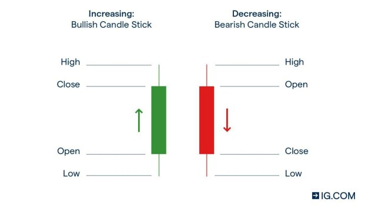
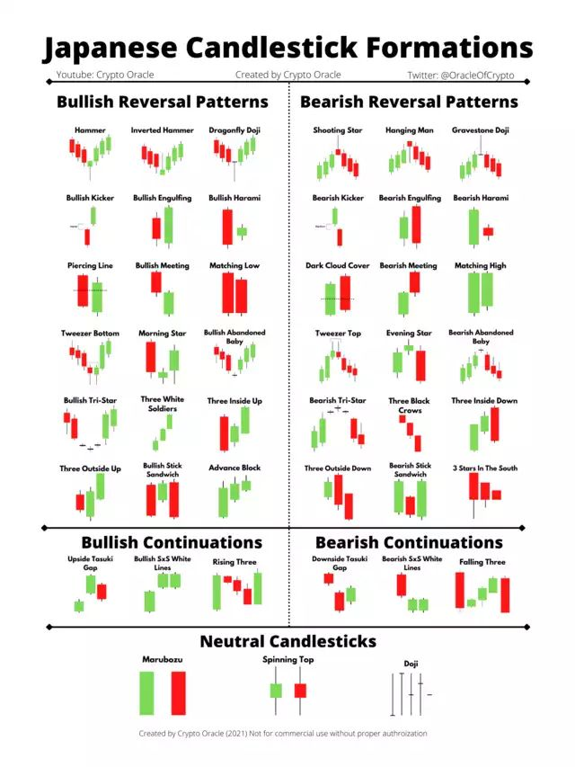
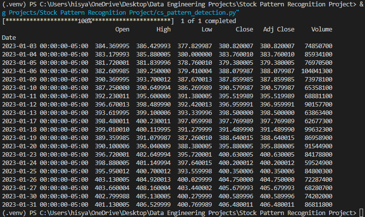
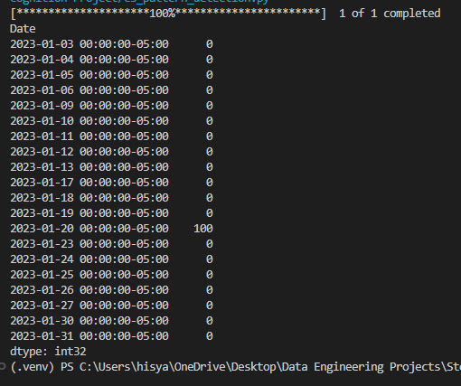
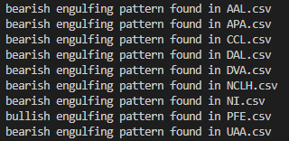
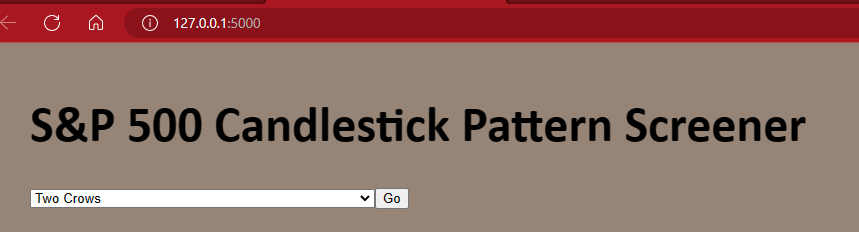
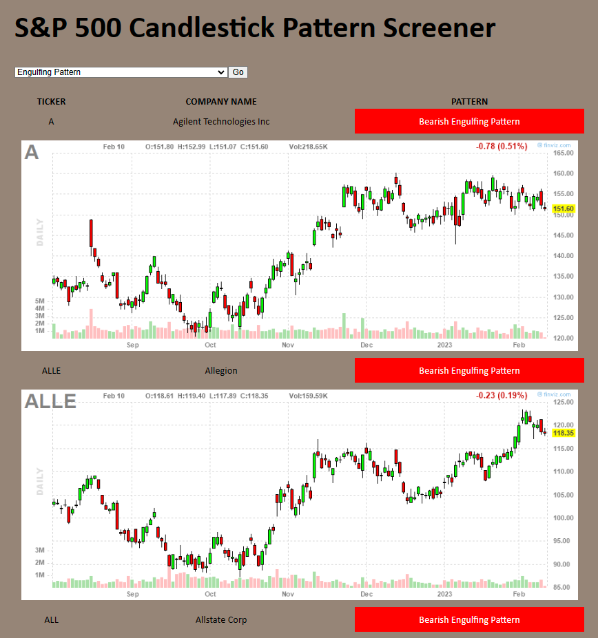

Trading Series I: S&P500 Candlestick Pattern Screener WebApp using TA-lib, Yahoo Finance API and Flask
By Hisyam
- 15 minutes read - 3062 wordsIn this project, I built a WebApp using Flask to filter stocks using price pattern recognition module from TA-lib. User can pick a pattern from a dropdown list and my program will filter from S&P500 stocks and fetch names that meet the pattern criteria.
Table Of Contents
Overview
What is candlestick pattern?
In the world of financial market, Technical Analysis (TA) is the art of interpreting price movement data and deriving insights on the likelihood of an asset to move in certain direction. There are dozens of ways to analyze this. One of them is by using the Japanese Candlestick Patterns. Candlestick charts are thought to have been developed in the 18th century by Munehisa Homma, a Japanese rice trader. They were introduced to the Western world by Steve Nison in his book Japanese Candlestick Charting Techniques, first published in 1991.

The price data is represented by a “candlestick” with High, Low, Open and Close of a specific timeframe, usually daily. Green candle represent bullish formation, meaning the close is higher than the open and vice versa. When the data is span accross longer periods, these candles will form certain patterns that can dictate, based on probabilities of the likeliness of the direction the price will move, either to the upside or downside. TA-lib is an open-source library in Python that archives all these patterns recognition.

How will this program work?
Note: For this project, I did not create a full database (which will be an idea to be developed further in the future), instead I only store the S&P500 data into csv files. This means that if the index constituents change, it will not be reflected in this program. Also, for this project there will be no updating of the price automatically, I only focused on making the end-to-end WebApp functional (for now). In the future version, I might add additional feature to cater for data updating.
-
Data Source: For the list of companies I used this dataset. For stock price data, I used yfinance API to fetch latest price of each stock.
-
Data Extraction: The program will iterate through each company in the stocks list and pass the stock symbol to yfinance function, in return yfinance will fetch price data. These pricedata will be populated in a csv for each company.
-
Data Transformation: Use TA-lib to map the patterns to the price data. By default TA-lib will return an integer 0 if nothing matched, and 100 or -100 if a pattern matched. Then, make a conditional sequence to separate those names where a pattern was detected.
-
Web Framework: using Flask to build a simple WebApp with basic front-end.
-
Data Loading: load detected stocks into a Flask App. The App will have some basic front-end UI for interactivity.
Data Extraction
To access Yahoo Finance API for market data, we use the python package yfinance. Refering to the yfinance documentations, we can extract a particular stock price data using this code:
1data = yf.download("SPY", start = "2023-01-01", end = "2023-02-01")
The code is pretty much self-explanatory. Here we download price data of ticker ‘SPY’ from Yahoo finance between start date to end date and stores the data into the variable data. A simple print of this code will yield:

The ‘Open’ is the start price of a trading day, the ‘Close’ is the closing price. ‘High’ is the highest point in which the price went up during that day and ‘Low’ is the lowest price ofthe day. Volume is the total volume traded on the day. We can use this data to pass into TA-lib stock recognition function.
From this dataset, we can get all the ticker symbols for S&P500 stocks and feed them into yfinance. A simple program to do this can be written as follows:
1with open('datasets/sp500.csv') as f:
2 companies = f.read().splitlines()
3 for company in companies:
4 symbol = company.split(',')[0]
I used the open() python in-built method to read csv file. Because I removed the header beforehand, I can straight away read the first row without having a problem when processing. If you prefer to remove header in code, we can skip the first row by modifying the code by adding in next(csv.reader(f)) right after you open the file. The code will look as follows:
1with open('datasets/sp500.csv') as f:
2 # skip header
3 next(csv.reader(f))
4 companies = f.read().splitlines()
The splitlines() method splits each line and store them as elements of a list. Now I can get the symbol by splitting each line, and get its first element. The symbol will then be fed into yfinance to fetch price data. These price data can be big, depending on the timeframe in which we want to extract. I just want 3 months worth of data with interval of one day, this means I want a daily chart in a 3 month timespan, this is equivalent to 90 rows of data per stock. Since we have 500 stocks, we will have a total of 500*90 = 45,000 rows of price data, not too bad. Now imagine we want a 5 minutes bar of one year worth of data per stock. That will give us, in total, 5*12*24*365 = 525,600 rows per stock. for 500 stocks, we will have 262,800,000 rows of data!
To store these data into my own ‘database’ of stocks, I can write the price data into a csv file and name each file with the stock symbol. To make this process simpler, use Pandas dataframe.
1for company in companies:
2 #get the first element, which is symbol
3 symbol = company.split(',')[0]
4 df = yf.download(symbol, start = "2022-12-09", end = "2023-02-09")
5 df.to_csv('datasets/daily/{}.csv'.format(symbol))
Now I have all price data for each stocks neatly stored in csvs!
Data Transformation
Here, my ultimate goal is not the price of stocks, but whether the stocks have certain patterns forming in their price action. Therefore, I need to do some tranformation.
What is TA-lib?
As discussed in the introduction, Technical Analysis is used by traders and investors to derive insights of the market’s price movement. TA-lib is an open source library that is used in analyzing the stock market’s historical data like share price, volume, etc. TA-lib developers did a good job formulating technical indicators like RSI, MACD etc. together in this package. For this project, I used the pattern database built-into the TA-lib package, these are TA-lib’s functions that have the ‘CDL’ prefix. For all function list, visit TA-lib documentation.
Example of candlestick pattern functions in TA-Lib:
Function Name | Pattern
------------------ | ------------------------
CDL3BLACKCROWS | Three Black Crows
CDL3INSIDE | Three Inside Up/Down
CDL3LINESTRIKE | Three-Line Strike
CDL3OUTSIDE | Three Outside Up/Down
CDL3STARSINSOUTH | Three Stars In The South
CDL3WHITESOLDIERS | Three Advancing White Soldiers
CDLABANDONEDBABY | Abandoned Baby
CDLADVANCEBLOCK | Advance Block
CDLBELTHOLD | Belt-hold
CDLBREAKAWAY | Breakaway
CDLCLOSINGMARUBOZU | Closing Marubozu
CDLCONCEALBABYSWALL | Concealing Baby Swallow
CDLCOUNTERATTACK | Counterattack
CDLDARKCLOUDCOVER | Dark Cloud Cover
CDLDOJI | Doji
CDLDOJISTAR | Doji Star
CDLDRAGONFLYDOJI | Dragonfly Doji
CDLENGULFING | Engulfing Pattern
CDLEVENINGDOJISTAR | Evening Doji Star
Since I want to be able to use these ‘database’ of function name, it is good if I can store this in a separate python file so I can call it later. So, I created a python file named patterns.py and create a dictionary named ‘candlestick_patterns’. I will use this variable later when building my WebApp.
How to use these functions?
we need to input Open, High, Low and Close data which should be an array-like data structure. The function will return integer 100, -100 or 0 indicating whether there is a pattern found. For example if I want to scan for Engulfing Pattern, I use the CDLENGULFING and pass in Open, High, Low, and Close dataframe.
1engulfing = talib.CDLENGULFING(data['Open'], data['High'], data['Low'], data['Close'])
A quick print of this will give me:

I can use this to screen through all my stock names, fetch price data, and pass the price data into TA-lib. Since I’m only interested in the most recent data, I need to further filter where I will extract these results, to do this I can simply just select the last data point and pass in a conditional statement to categorise whether a pattern was found, if so whether it is bearish or bullish? Or none was found.
Filtering all stocks
Recall that I stored all the stocks price data in a csv for each stock symbol, now we can access these data by reading the csv.
1stocks = {}
2
3with open('datasets/sp500.csv') as f:
4 for row in csv.reader(f):
5 stocks[row[0]] = {'company': row[1]}
This code will store all the symbol of stocks and company names into a dictionary. This way, it is easier for me to re-use the names later when I want to make a WebApp. Since I want a screener, for any given pattern, I want to apply the pattern function to all the price data of all stocks, and retrieve ones with pattern found. To do this, I have to iterate through each csv file and apply TA-lib function onto them.
1filename = os.listdir('datasets/daily')
2for file in filename:
3 df = pd.read_csv('datasets/daily/{}'.format(file))
4 symbol = file.split('.')[0]
5 result = talib.CDLENGULFING(df['Open'], df['High'], df['Low'], df['Close'])
6 last = result.tail(1).values[0]
7 if last > 0:
8 stocks[symbol][pattern] = 'Bullish {}'.format(candlestick_patterns[pattern])
9 elif last < 0:
10 stocks[symbol][pattern] = 'Bearish {}'.format(candlestick_patterns[pattern])
11 else:
12 stocks[symbol][pattern] = None
I use the os listdir function to list all my CSVs stored and loop through each file in the folder. For each file, I create a dataframe, get the symbol, and pass this dataframe to a TA-lib function, in this case I want to search for enguilfing pattern. Now, I can get the latest result by defining latest price which is the ’last’ variable. A quick print statement inside the conditionals will give the followuing result indicating a pattern was found.

Now the program is working. This will be the basis for the backend of my app. Now I can modify these codes to be more customizable and interactive so I can get any pattern that I want. And from here, I can integrate a front-end to make it more user-friendly.
Building Flask WebApp
I use Flask as my front-end. For more information on Flask, visit the docs here. From the docs, to build a simple flask website, we just have to instantiate a Flask object. The syntax is like below:
1app = Flask(__name__)
this will create an instance of Flask. Now I can specify the route for each flask function that I created. For example, I want a mainpage, I will need to add a static method to specify the route of the page.
1@app.route("/")
2def mainpage():
This function basically tells us that if I go to the host website and go to ‘/’ route, I will land on the method ‘mainpage’. And all the things that we defined inside the mainpage() will run, obviously in this example I will get an empty page as there’s nothing specified in the mainpage() method.
The Front - End design
We can create our website template using html or css and pass in the file into our Flask methods. This is important as we need an interactive front-end that functions as expected with our back-end. The function ‘return_template’ will return our html/css template to Flask and it will automatically render the webpage. A simple code will look like this.
1@app.route("/")
2def mainpage():
3 return render_template('index.html')
where index.html is referenced.
I will not go into so much detail on this part as it will be another whole long story. To see the html file, visit my github. This code basically takes in functions defined in our backend and referenced it to our template. For example, I can create a dropdown of all the patterns by referencing the ‘patterns’ variable that I created in the main code.
1 <body style="background-color: rgba(94, 68, 47, 0.651);">
2 <h1> S&P 500 Candlestick Pattern Screener </h1>
3 <!-- This is the dropdown bar inside form tag-->
4 <form>
5 <!-- selection dropdown -->
6 <select name = "pattern">
7 <!-- looping into pattern variable, which is passed from app.py -->
8 {% for pattern in patterns%}
9 <option value = "{{pattern}}" {% if pattern == pattern_ %} selected = "selected" {%endif%}> {{ patterns[pattern] }} </option>
10 {% endfor%}
11 <!-- input style set to submit and UI as 'Go'. This will let the user click onto the Go button a
12 nd the web path will point towards pattern = option -->
13 <input type = "submit" value = "Go"> </input>
14 </select>
15 </form>
16</body>
Here, I basically created a simple dropdown form submission where it takes user’s input and store it in a variable named “pattern”, this variable can be returned to my back-end to fetch the output. Here’s a screenshot of how this code renders:

In this case, when a user select from a list of patterns and click ‘Go’, the program will fetch the pattern name and return it to my back-end for processing. As simple as that.
Data Loading
Back-end processing
My backend is basically what I’ve explained so far in Data Extraction and Data Transformation, just put together in a Flask environment. Some things will be added to interface with the front-end.
1@app.route("/")
2def mainpage():
3 pattern = request.args.get('pattern', None) #get request information, in this case we want the name of the pattern. This will be supplied from our UI in front-end
4 stocks = {}
5
6 with open('datasets/sp500.csv') as f:
7 for row in csv.reader(f):
8 stocks[row[0]] = {'company': row[1]}
9
10 if pattern: #if a pattern was selected.
11 filename = os.listdir('datasets/daily')
12 for file in filename:
13 df = pd.read_csv('datasets/daily/{}'.format(file))
14 patfunc = getattr(talib, pattern) #get talib function of name 'pattern' i.e. CDLENGULFING
15 symbol = file.split('.')[0]
16
17 try:
18 result = patfunc(df['Open'], df['High'], df['Low'], df['Close'])
19 last = result.tail(1).values[0]
20 if last > 0:
21 stocks[symbol][pattern] = 'Bullish {}'.format(candlestick_patterns[pattern])
22 elif last < 0:
23 stocks[symbol][pattern] = 'Bearish {}'.format(candlestick_patterns[pattern])
24 else:
25 stocks[symbol][pattern] = None
26 except:
27 pass
28
29 return render_template('index.html', patterns = candlestick_patterns, stocks = stocks, pattern_ = pattern) #send variable to html template
Some addition in this code is the use of request.args.get() method. This method basically fetch the form submission from the front-end. When a user selected a pattern, the name of the pattern will be passed here. I can use this name to supply it to talib function and get the desired pattern, this way I can call a function based on user input. This will make this program more interactive.
In summary, the back-end basically do these:
- get the information of which pattern a user wants to screen.
- create a stock dictionary from a csv file which contains all S&P 500 stocks.
- Get all price data for each stocks from the ‘database’ that was created before.
- apply TA-lib function with reference to the pattern selected.
- Filter result to the last price datapoint, based on integer value: None if 0, bullish if 100, bearish if -100.
- return the result to front-end
This code returns the template file, the patterns for my dropdown list, the stocks for my stock list fetched after filtering (this will later be returned back to our front-end), and pattern_ which is the pattern selected from user input. In essence, flask is a back-to-back interaction between a back-end process and a front-end interface. Sometimes it’s a bit confusing as which refers to which, but it all makes sense once we get it.
Interacting with Back-End
I already have my back-end processes and a UI for input. Now, I need to fetch the result from my back-end and display the output back to my front-end. Inside the same body tag as my input UI, I added a table that will display the name of stocks, the signal (i.e. bearish or bullish), and the chart of the stock based on what pattern the user selected. For simplicity, I referenced the chart image to finviz website, all I need to do to get a specific stock chart is to just change a portion of the URL formatting that is pointing to a sotck’s symbol. By changing the stock symbol portion of the URL, I can get any snapshot of latest chart from finviz and display them on my front-end. (refer to code below).
1<table>
2 <tr>
3 <th style="text-align:center">
4 TICKER
5 </th>
6 <th style="text-align:center">
7 COMPANY NAME
8 </th>
9 <th style="text-align:center">
10 PATTERN
11 </th>
12 </tr>
13 {% for stock in stocks %} <!--stock variable referenced from back-end-->
14 {% if stocks[stock][pattern_] %}
15 <tr>
16 <td style="text-align:center">{{ stock }}</td>
17 <td style="text-align:center">{{stocks[stock]['company']}}</td>
18 <td class = '{{stocks[stock][pattern_]}}'>{{stocks[stock][pattern_]}}</td>
19
20 </tr>
21 <tr>
22 <td colspan = "3">
23 <img src = "https://charts2.finviz.com/chart.ashx?t={{stock}}&ty=c&ta=0&p=d&s=l" /> <!-- just change the name of the stock to get chart snapshot from finviz -->
24 </td>
25 </tr>
26 {% endif %}
27 {% endfor %}
28</table>
Recall that in my back-end, I return ‘stocks’ to the front-end. In this code, the if statement make sure that the result will only show something if ‘stocks’ is non-null.
And that is basically the whole program. A screenshot of the working of this program is as below.

Updating Stocks Price Data
I created another web route to update stocks price data. It is basically exactly as data extraction section, but I put it in as a Flask method.
1@app.route("/updateprice")
2def snapshot():
3 with open('datasets/sp500.csv') as f:
4 companies = f.read().splitlines()
5 for company in companies:
6 symbol = company.split(',')[0]
7 end_date = date.today()
8 start_date = end_date - relativedelta(months = 3)
9 df = yf.download(symbol, start = start_date, end = end_date)
10 df.to_csv('datasets/daily/{}.csv'.format(symbol))
11 return "Successfully update stock prices."
To update price, simply navigate to /updateprice domain. Data extraction will commence again.
Further Development
This project can be improved by:
- Adding a proper database instead of using csvs to store the stock price. It is easier to perform CRUD operation using SQL-based database. This will make the system more efficient and faster.
- Adding data orchestration/scheduling so that the price update can be automatically executed instead of manual update.
- Adding interactive charting instead of a snapshot of the price chart.
Source Code
You can find the codes in my GitHub.